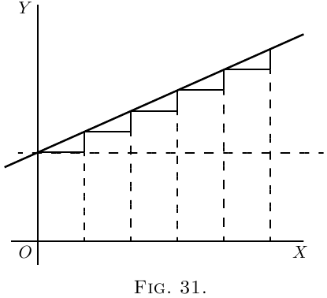
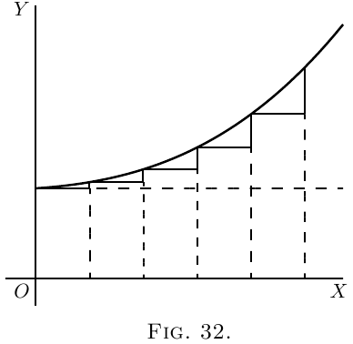
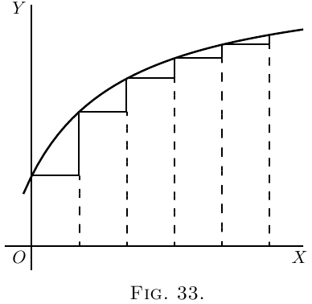
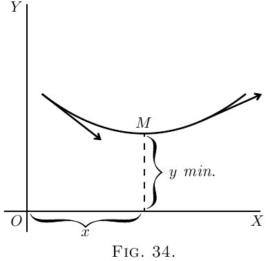
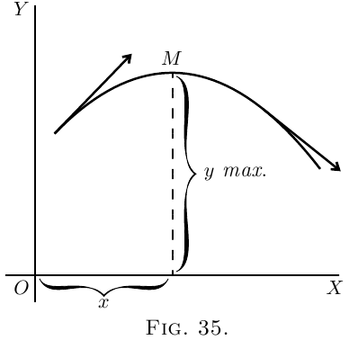

第 12 章曲线的曲率
回到连续微分的过程，有人可能会问：为什么要进行两次微分？我们知道，当变量是空间和时间时，通过两次微分可以得到物体的加速度；在几何意义上，应用于曲线时，\(\dfrac{dy}{dx}\) 表示曲线的斜率。但在这种情况下，\(\dfrac{d^2 y}{dx^2}\) 又是什么意思呢？显然，它表示斜率变化的速度（以单位长度 \(x\) 为基准），简而言之，它是斜率曲率的一个量度。


假设斜率是常数，如图31所示。
此时，\(\dfrac{dy}{dx}\) 是一个常值。
然而，假设有一种情况，如图32所示，斜率本身在向上增加，那么 \(\dfrac{d\left(\dfrac{dy}{dx}\right)}{dx}\)，即 \(\dfrac{d^2y}{dx^2}\)，将是正值。
如果斜率随着向右前进而减小（如图14或图33所示），即使曲线可能在向上，由于这种变化使斜率减小，因此其 \(\dfrac{d^2y}{dx^2}\) 将是负值。

现在是时候揭示另一个秘密了——如何判断通过“令其等于零”得到的结果是最大值还是最小值。诀窍是：在微分后（以得到需要令其等于零的表达式），再进行第二次微分，观察第二次微分的结果是正值还是负值。如果 \(\dfrac{d^2y}{dx^2}\) 是正值，那么得到的 \(y\) 值是最小值；如果 \(\dfrac{d^2y}{dx^2}\) 是负值 ,那么得到的 \(y\) 值是一个最大值。这就是规则。


其原因应该显而易见。想象一条在其中有最小点的曲线（如图34所示），最小 \(y\) 点标记为 \(M\)，曲线在此处向上凹。在 \(M\) 的左侧，斜率是向下的，即负值，并且逐渐变得不那么负。在 \(M\) 的右侧，斜率变为向上，并且逐渐越来越向上。显然，当曲线经过 \(M\) 时，斜率的变化是使 \(\dfrac{d^2y}{dx^2}\) 为正值，因为随着 \(x\) 增加向右，其作用是将向下的斜率转变为向上的斜率。
类似地，考虑任何具有最大点的曲线（如图16或图35所示），曲线在此处向下凸，最大点标记为 \(M\)。在这种情况下，当曲线从左向右通过 \(M\) 时，其向上的斜率变为向下的或负的斜率，因此此时“斜率的斜率” \(\dfrac{d^2y}{dx^2}\) 是负值。
现在回到上一章的例子，用这种方法验证在特定情况下的结论是最大值还是最小值。你会在下面找到一些完整的例子。
(1) 求以下函数的最大值或最小值，
并判断其为最大值还是最小值。
(2) 求函数 \(y = x^3-3x+16\) 的极大值和极小值。
\(x = 1\) 时为正值，因此，\(x=1\) 对应于最小值 \(y=14\)。\(x=-1\) 时为负值，因此 \(x=-1\) 对应于最大值 \(y=+18\)。
(3) 求函数 \(y=\dfrac{x-1}{x^2+2}\) 的极大值和极小值。
即 \(x^2 - 2x - 2 = 0\)，其解为 \(x =+2.73\) 和 \(x=-0.73\)。
分母始终为正，仅需确定分子的符号。
当 \(x = 2.73\)，分子为负，对应最大值 \(y = 0.183\)。
当 \(x=-0.73\) 分子为正，对应最小值 \(y=-0.683\) 。
(4) 某工厂产品的产品处理成本 \(C\) 随周产量 \(P\) 的关系为 \(C = aP + \dfrac{b}{c+P} + d\)，其中 \(a\)、\(b\)、\(c\)、\(d\) 均为正常数。求成本最小时的产量。
最高或最低。
因此 \(a = \dfrac{b}{(c+P)^2}\)，\(P = ±\sqrt{\dfrac{b}{a}} - c\)。
由于产量不能为负，故 \(P=+\sqrt{\dfrac{b}{a}} - c\) 。
对所有 \(P\) 为正，因此 \(P = +\sqrt{\dfrac{b}{a}} - c\) 对应于最小值。
(5) 一栋建筑使用 \(N\) 盏灯具照明的总成本为每小时 \(C\)。
其中
- $ E$ 为商用效率（瓦/烛光）;
- \(P\) 是为单灯烛光功率；
- \(t\) 为单灯平均寿命（小时）；
- \(C_l =\) 每小时灯泡更换成本；
- \(C_e =\) 每千瓦时电能成本。
灯泡的平均寿命 \(t\) 与其商用效率 \(E\) 的关系为 \(t = mE^n\)，其中 \(m\) 和 \(n\) 为灯泡的特性常数。
求使照明总成本最低的商用效率。
我们有
时取最大值或最小值。
显然，这是最小值，因为
对正值 \(E\) 为正。
对于一种 \(16\) 烛光功率灯，\(C_l= 17\)，\(C_e=5\)，\(m=10\)，\(n=3.6\)。